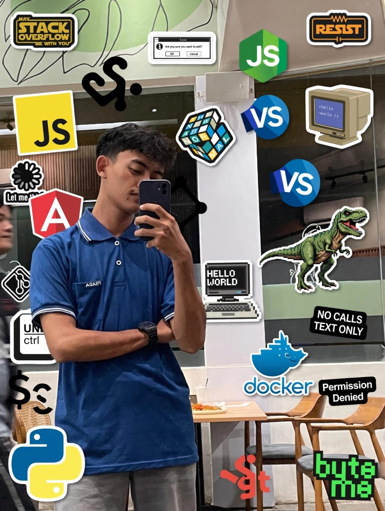

Masih kuliah
Universitas Graha Karya Muara Bulian
Sistem Informasi · Semester 3
PORTOFOLIO · 2026
Universitas Graha Karya Muara BulianSemester 3
Saya suka membuat hal digital yang simpel dan berguna. Saat ini, saya belajar pengembangan web, UI/UX, dan machine learning.
“Mengubah ide jadi nyata.”

FOTO PROFIL01Tentang saya
Sedikit cerita tentang saya dan hal yang sedang saya pelajari.
Halo, saya Hamzah Kholilul Azka, mahasiswa Sistem Informasi di Universitas Graha Karya Muara Bulian. Saya tertarik pada cara teknologi membantu menyelesaikan masalah sehari-hari.
Sekarang saya sedang belajar membuat website, merancang UI/UX, dan mengenal machine learning. Pelan-pelan, sambil terus mencoba.
02Pendidikan
Saat ini saya kuliah di Universitas Graha Karya Muara Bulian.
Masih kuliah
Sistem Informasi · Semester 3
03Keahlian & minat
Teknologi yang saya gunakan dan bidang yang ingin saya kenali lebih jauh.
Ini semua masih saya pelajari dan kembangkan.
04Proyek & eksplorasi
Beberapa konsep yang sedang saya pelajari dan kembangkan.
Konsep dashboard untuk melihat jadwal, tugas, dan progres kuliah dalam satu tempat.
Latihan membuat landing page yang rapi, mudah dipakai, dan nyaman dilihat di berbagai layar.
Catatan belajar data dan machine learning dengan Python, dari konsep dasar sampai eksperimen kecil.
Ini masih berupa konsep yang ingin saya kembangkan.
Ada ide? Mari ngobrol05Sertifikat
Sertifikat dan pencapaian saya akan ditampilkan di sini.
Sertifikat · 0
Bagian ini akan diperbarui saat ada pencapaian baru.
06Kontak
Saya terbuka untuk berbagi, belajar bareng, dan berdiskusi soal proyek.